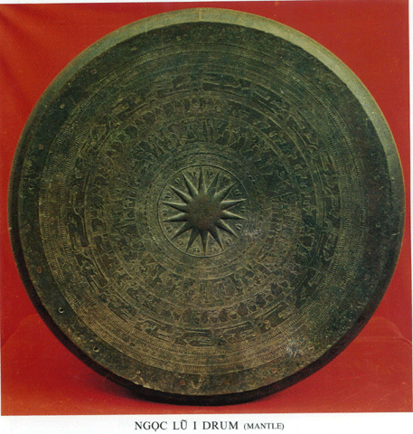
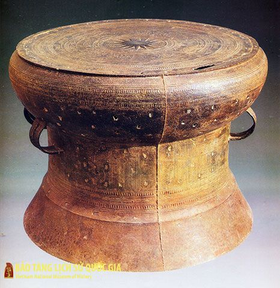
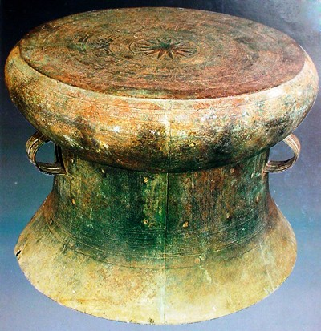

01
Vào Học vui trước
Phần này phù hợp nhất cho lần đầu ghé thăm: ngắn gọn, dễ hiểu, tập trung vào khái niệm và những chi tiết dễ nhận ra trên trống đồng.
Khám phá học vuiBảo tàng số Đông Sơn
Không gian học tập tương tác về di sản Việt cổ, nơi hoa văn, nghi lễ, đời sống cộng đồng và kỹ thuật đúc đồng được kể lại bằng trải nghiệm số.
Dù bạn là người mới tìm hiểu, muốn đọc tư liệu kỹ hơn hay thích học bằng trò chơi, bảo tàng số này đều có một lối vào rõ ràng để bắt đầu.
Phần này phù hợp nhất cho lần đầu ghé thăm: ngắn gọn, dễ hiểu, tập trung vào khái niệm và những chi tiết dễ nhận ra trên trống đồng.
Khám phá học vuiKhi muốn hệ thống lại kiến thức, bạn có thể đi tiếp sang phần phân loại, cấu tạo, hoa văn, niên đại và các hiện vật tiêu biểu.
Mở trang tài liệuHọc xong là có thể chơi ngay: lật thẻ họa tiết, ghép hình và kiểm tra trí nhớ để biến việc đọc thành trải nghiệm thật sự.
Vào khu trò chơiTrống đồng không chỉ là nhạc khí nghi lễ. Nó còn gắn với biểu tượng quyền lực, đồng thời lưu lại dấu vết về đời sống, tín ngưỡng, giao thông đường nước, kỹ thuật đúc đồng và cách cộng đồng xưa hình dung về thế giới.
Chỉ cần nắm vài điểm mấu chốt như cấu tạo, mô-típ và phân loại, bạn sẽ dễ theo dõi hơn khi đi sang phần hiện vật, tư liệu và trò chơi tương tác.
Xem bản tài liệu đầy đủ →Một loại nhạc khí bằng hợp kim đồng, gắn với nghi lễ, quyền lực và ký ức cộng đồng.
Hệ Heger chia trống đồng thành bốn nhóm chính, trong đó loại I thường được xem là tiêu biểu nhất.
Ngôi sao trung tâm, hình chim, thuyền, người múa và các vòng hoa văn đồng tâm.
Vì mỗi chiếc trống kể câu chuyện về kỹ thuật, biểu tượng và đời sống Việt cổ.
Đây là bốn hiện vật tiêu biểu để bắt đầu: có chiếc giúp nhận ra vẻ đẹp chuẩn mực, có chiếc để so sánh bố cục, có chiếc cho thấy sự tiếp nối loại hình, và có chiếc đưa câu chuyện vào bối cảnh lịch sử cụ thể.

Thường được xem là một trong những chiếc trống Đông Sơn đẹp và giàu hoa văn nhất, rất phù hợp để học cách đọc mặt trống từ tâm ra ngoài.
Xem trong tài liệu
Nổi bật với bố cục gần với Ngọc Lũ nhưng vẫn có sắc thái riêng, thích hợp để so sánh cách các dải hoa văn được tổ chức trên thân và mặt trống.
Xem trong tài liệu
Gắn với không gian khảo cổ Cổ Loa, chiếc trống này giúp đặt hiện vật vào bối cảnh lịch sử của vùng châu thổ sông Hồng.
Xem trong tài liệu
Đây là một ví dụ của nhóm Heger II, thích hợp để quan sát sự tiếp nối và biến đổi của truyền thống trống đồng sau nhóm Heger I.
Xem trong tài liệuMỗi chặng trong hành trình này nối tiếp nhau tự nhiên, giúp người học đi từ kiến thức nền đến trải nghiệm tương tác một cách liền mạch.
Học vui giúp người mới làm quen với trống đồng qua cách kể đơn giản, hình ảnh rõ và các ý chính dễ nắm.
Tài liệu mở rộng sang phân loại, cấu tạo, mốc thời gian và hiện vật để người học có thể hệ thống lại kiến thức.
Trò chơi biến phần đã học thành phản xạ nhận diện và ghi nhớ thông qua thử thách ngắn, nhanh và có điểm số.
Ba người chơi nổi bật nhất tuần này đang dẫn đầu nhờ tốc độ quan sát, độ chính xác và khả năng ghi nhớ họa tiết Đông Sơn qua từng thử thách.
Bứt tốc
Chuỗi 9 lượt chính xác liên tiếp.
17.520 điểmGiữ phong độ
Dẫn đầu nhờ tốc độ trả lời và độ chính xác cao.
18.940 điểmỔn định
Điểm số đều ở cả ba nhóm trò chơi.
16.880 điểmHãy bắt đầu từ một chiếc trống tiêu biểu, đọc câu chuyện của nó, rồi thử kiểm tra trí nhớ bằng những trò chơi ngắn để hành trình khám phá trở nên sống động hơn.